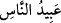
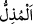
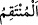

“Bunlardan ilkinin” yâni, birinci ifsâd için vâdedilen azâbın “zamanı gelince,”
zulümlerinize karşı sizi cezalandırmak için “üzerinize güçlü kuvvetli kullarımızı
gönderdik.”
Çoğunlukla Allah’ın kulları için “ ibâdullah”, insanların kulları için “ abîdü’n-nâs” denir.
Kâşifî der ki: “ İbâden lenâ = kullarımız” ifâdesindeki izâfet, yaratılış
bakımındandır, yoksa medh için olan bir izâfet değildir. Çünkü en doğru görüşe göre
burada kasdedilen Buhtunnasr’dır.”
Fakir (Bursevî) der ki: Buradaki izâfet ile kasdedilen, onların  el-Müzill; yâni
hor, hakir kılan,  el-Müntakîm/intikam olan, el-Kahhâr/kahreden isimlerinin
mazharları olmalarıdır. Nitekim Allah’ın azamet sâhibi olması bunu gerekli kılar. Yoksa
bu, onlara şeref vermek için değildir. Çünkü kâfir buna ehil değildir.
Âyette güçlülük şiddete, nisbet edilmiştir. Çünkü savaş şiddeti gerektiren bir
durumdur. Buna göre mânâ “Onlar savaşlarda kuvvet ve kahretme gücüne sahip
kimselerdi” demek olur. Dimyâtî: “Onların sadâsı şimşek gibi korkunçtu.” der. Burada
kasdedilen, Bâbil mecûsîlerinden Buhtunnasr’dır. Buhtunnasr, bir putun ismidir. Onun
nisbet edildiği babası; bilinmemektedir. Bazıları demiştir ki: Buhtunnasr, bu tarihte o
diyârın meliki Lehrast b. Key Ecvad’ın Irak vâlisi idi. Lehrast, Türklerle savaşıyordu.
Buhtunnasr’ı da ilk defada İsrâiloğulları’na o gönderdi.
“Bunlar, evlerin arasında dolaşarak (sizi) aradılar.” Yâni fesad ve bozgunculuk
çıkardığınız için sizi yakalamak için evler arasında araştırdılar. Öldürmek, esir almak
ve baskın düzenlemek için evlerin arasında, sokak içlerinde dolaştılar. Âlimleri ve ileri
gelen şahısları öldürdüler. Tevrât’ı yaktılar. Mescidi harap ettiler. Yetmiş bin kişiyi esir
aldılar. İşte bu, sünnetullah gereği zâlimin zâlime tasallutu kabilindendir.
“Bu,” onlara azâb edileceği vaadi “yerine getirilmiş” mutlaka yerine getirilmesi
gereken “bir vaad idi.”
6. Sonra onlara karşı size tekrar (galibiyet ve zafer) verdik; servet ve oğullarla
gücünüzü arttırdık; sayınızı daha da çoğalttık.
“Sonra onlara karşı size tekrar (galibiyet ve zafer) verdik” yâni yüz sene sonra
tevbe edip fesad çıkarmaktan ve büyüklenmekten tevbe edip vazgeçtiğiniz zaman size
zulmeden bu kavme karşı zafer ve galebe ihsan ettik. Yâni onları size gâlip kıldıktan
sonra sizi onlara tekrar muzaffer kıldık.
Hikâye edilir ki: Hemedanlı Koreş, Bâbillilere karşı savaştı. Onlara galip geldi ve o